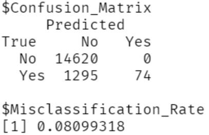
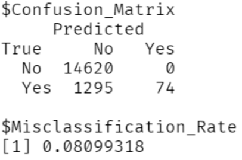
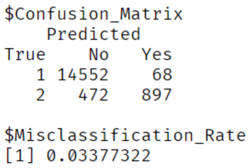

This is the function for calculating the optimal k to use. Due to the long computing time (about 5 hours thanks to Connor), there will be no output shown here.
library(class)
knn_k_misclass = function(k_test){
knn_output = knn(train = heart.training.adj, test = heart.test.adj,
library(class)
knn_k_misclass = function(k_test){
knn_output = knn(train = heart.training.adj, test = heart.test.adj,
cl = heart.training.adj$HeartDisease, k = k_test, use.all = T)
confusion_knn = t(table(knn_output, heart.test$HeartDisease, dnn = c("Predicted","True")))
misclassification_rate_knn = 1 - (sum(diag(confusion_knn)) / sum(confusion_knn))
return(misclassification_rate_knn)
}
min_misclass_rate = Inf
misclass_rates = numeric()
optimal_k = NULL
start_time = proc.time()
n=sqrt(nrow(heart.training))/2
for(i in 1:ceiling(n)){
cur_misclass_rate = knn_k_misclass(i)
misclass_rates[i] = cur_misclass_rate
if(cur_misclass_rate < min_misclass_rate){
min_misclass_rate = cur_misclass_rate
optimal_k = i
}
}
optimal_kTo determine what the optimal k value to use for our kNN algorithms is, we ran an exhaustive search to compare the misclassification rates of ks from 1 to 277. By doing so, we found the optimal k value for our data to be k=3, which resulted in a misclassification rate of 0.0529. This rate is noticeably lower when compared to the misclassifcation rate when using the general practice k value of sqrt(n)/2 = 275.5 which was 0.0852. Thus, we find that the general practice k has worse performance than the optimal k. Therefore, if using an algorithm that can find the optimal k efficiently, doing so is recommended over using the simpler general practice k value.
This function is used to compute the confusion matrix of the knn full and no medical models as well as the full, no medical, and medical logistic regression models.
confusion_misclass = function(data, model, conf_mat = F, err_rate = T, threshold = 0.5, knn=F){
if(knn == F){
prob = predict(model, newdata = data, type = "response")
predicted = ifelse(prob > threshold, "Yes", "No")
confusion = table(predicted, as.character(data$HeartDisease),
dnn = c("Predicted","True"))
misclassification_rate = 1 - (sum(diag(confusion)) / sum(confusion))
confusion = t(confusion)
} else {
confusion = t(table(model, data$HeartDisease, dnn = c("Predicted","True")))
colnames(confusion) = c("No", "Yes")
misclassification_rate = 1 - (sum(diag(confusion)) / sum(confusion))
}
result = list()
if(conf_mat == T){
result$Confusion_Matrix = confusion
}
if(err_rate == T){
result$Misclassification_Rate = misclassification_rate
}
return(result)
}Confusion matrix for knn full, k = 3 
Confusion matrix for knn full, k = 3
Confusion matrix for knn no medical, k = n 
Confusion matrix for knn no medical, k = 3 
To determine what impacts prior medical conditions and diseases have on whether a person will be predicted to develop heart disease, we will be comparing the misclassification rates of several different algorithms and models. We will be comparing the results of a kNN algorithm that uses all predictors and a kNN algorithm that uses all predictors except the predictors for prior medical conditions. Additionally, we will be comparing the results of a logistic regression using all of the predictors, a logistic regression using all of the predictors except the predictors for prior medical conditions, and a logistic regression using only the predictors for prior medical conditions. We will not be using a kNN algorithm based on only the predictors for prior medical conditions because due to the low number of factors and large sample size, this results in there being far too many ties (each possible observation will have ~5000 ties) so the kNN algorithm will not be usable.
library(kableExtra)
tests = c("kNN: Full", "kNN: w/o Medical",
"LogReg: Full", "LogReg: w/o Medical", "LogReg: Only Medical")
miss.rates = c(confusion_knn_3[[2]], confusion_knn_med_3[[2]], confusion_full[[2]],
confusion_misclass_no_med[[1]], confusion_misclass_med[[1]])
misclass.rate.df = data.frame(Model = tests,
Misclassification_Rates = miss.rates)
misclass.rate.df %>%
kbl(caption = "Misclassification Rate by Model") %>%
kable_classic(full_width = F, html_font = "Cambria")
#%>% save_kable(file = "misclasstable.png")Table of the misclassification rates by all models
When running the kNN algorithm (with k=3) using all of the predictors, we had a misclassification rate of 0.0415. The kNN algorithm (with k=3) without the predictors for prior medical conditions, resulted in a smaller misclassification rate of 0.0339. However, the logistic regression using all of the predictors had a misclassification rate of 0.0833 and the logistic regression not using the predictors for prior medical conditions had a misclassification rate of 0.0861. Lastly, the logistic regression which only used the predictors for prior medical conditions had a misclassification rate of 0.0852.
Based on these results, we see that the exclusion of the predictors for prior medical conditions decreased the misclassification rate when using kNN, but increased the misclassification rate when using logitistic regression. However, since these differences were so slight (<0.01), we conclude that the exclusion of prior medical conditions had no siginificant effect on the effectiveness of the algorithms and models. However, we can also see that the logistic regression model that only considered prior medical conditions had a misclassification rate only 0.0019 larger than the full model. Thus, we find that a model that only uses prior medical conditions is almost as effective, if not as effective as the full model. Therefore, we conclude that prior medical conditions have a significant impact on whether an individual may develop heart disease.